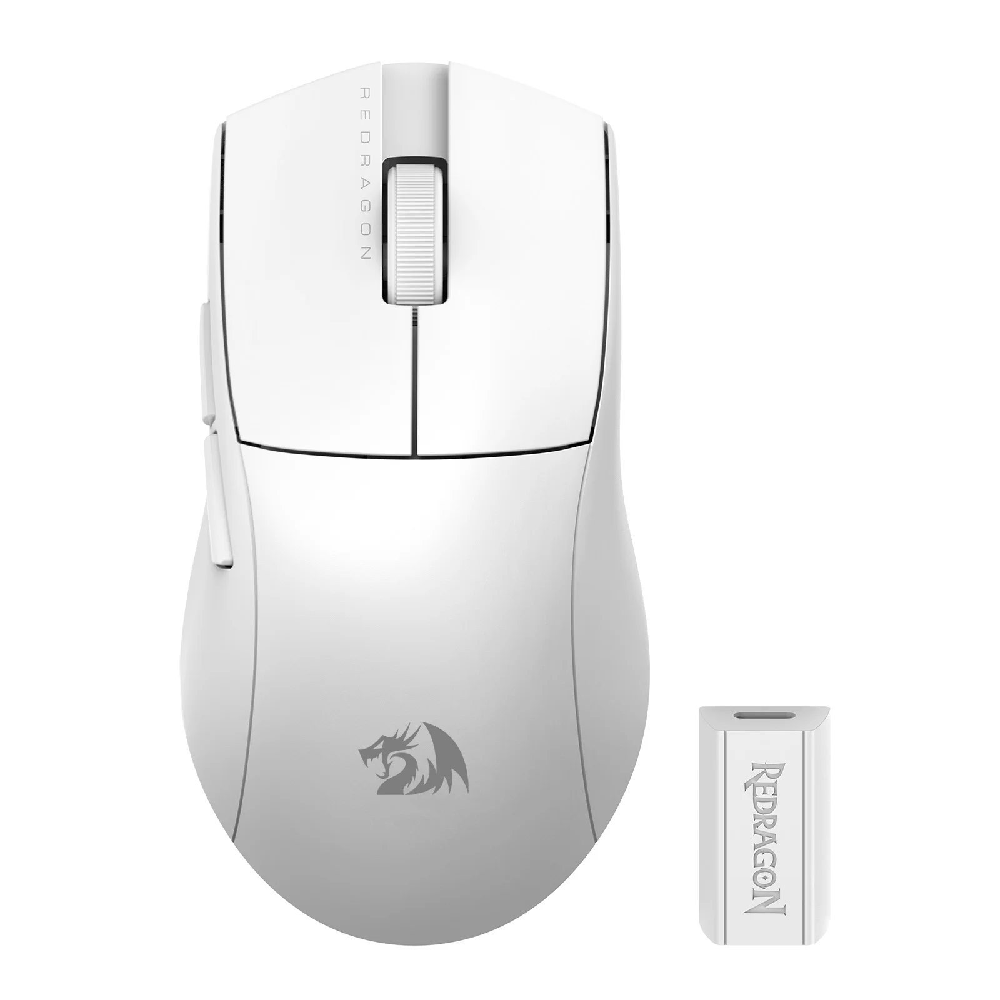

 O novo King Pro 4K foi projetado para trazer mais rapidez e precisão nas gameplays. Com 4K de Polling Rate, esse incrível mouse informa sua posição de rastreio a cada 0,25 milissegundos, tornando o tempo de resposta aos clicks ainda mais rápido!